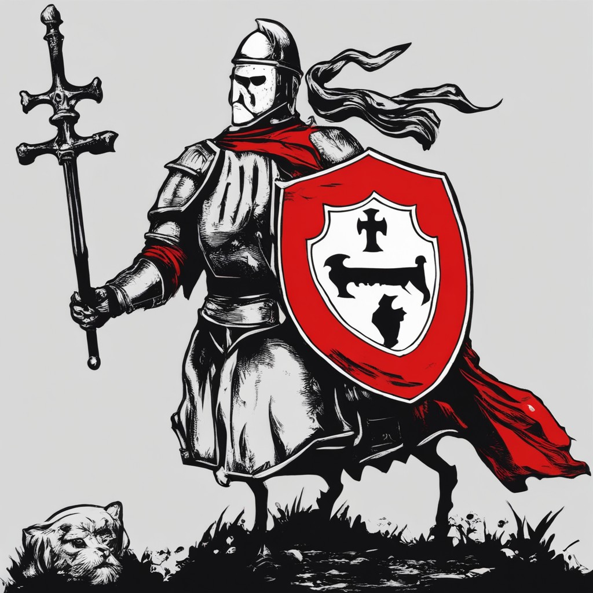
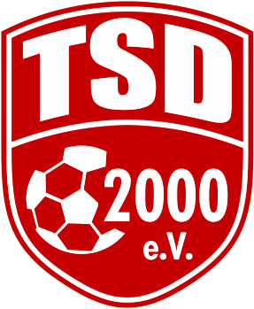
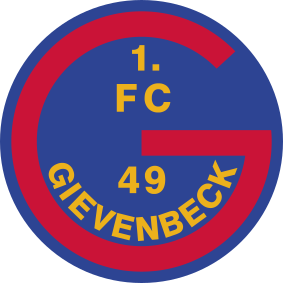
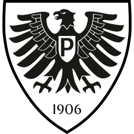
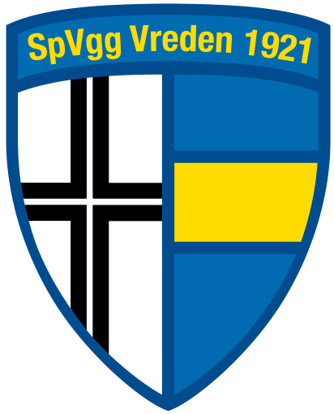
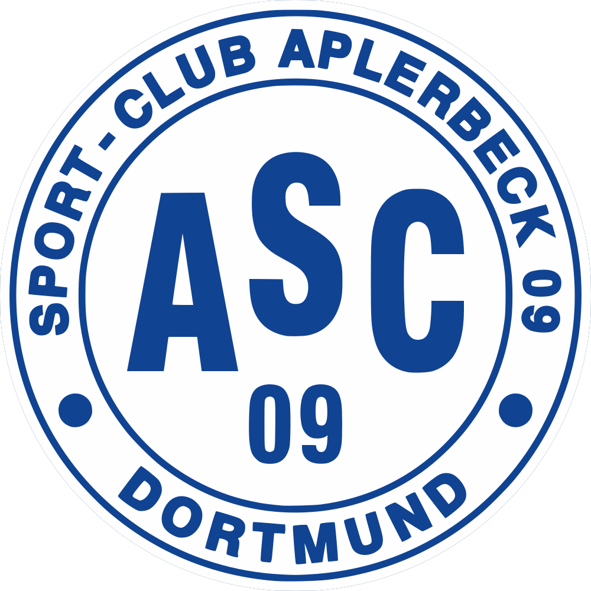
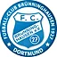
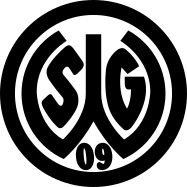

SF Siegen Schedule

Siegen Ultras are a community fan base supporting our beloved
SF Siegen!
You can Purchase Tickets
on the Offiziel SF Siegen site.
Check out the SF Siegen scheudle for game times:
| Support your Siegen Ultras | ||||||
| WochenTag | Datum | Abpfiff | Liega | Home Team | Score | Gegner |
|---|---|---|---|---|---|---|
| So. | 28.01.2024 | 06:30 Uhr | Oberliga Westfalen | SF Siegen | 1 : 1 | Victoria Clarholz |
| So. | 04.02.2024 | 07:00 Uhr | Oberliga Westfalen | Türkspor Dortmund | 3 : 3 | SF Siegen |
| Sa. | 10.02.2024 | 06:00 Uhr | Oberliga Westfalen | SF Siegen | 1 : 1 | Eintracht Rheine |
| So. | 18.02.2024 | 07:00 Uhr | Oberliga Westfalen | SF Siegen | TBD : TBD | 1. FC Gievenbeck |
| So. | 25.02.2024 | 07:30 Uhr | Oberliga Westfalen | SG Finnentrop/Bamenohl | TBD : TBD | SF Siegen |
| Mi. | 28.02.2024 | 11:30 Uhr | Oberliga Westfalen | SC Preusen Münster II | TBD : TBD | SF Siegen |
| So. | 03.03.2024 | 07:00 Uhr | Oberliga Westfalen | SF Siegen | TBD : TBD | SpVgg Vreden |
| So. | 10.03.2024 | 08:00 Uhr | Oberliga Westfalen | ASC 09 Dortmund | TBD : TBD | SF Siegen |
| So. | 17.03.2024 | 08:00 Uhr | Oberliga Westfalen | SF Siegen | TBD : TBD | FC Brünninghausen |
| So. | 24.03.2024 | 08:00 Uhr | Oberliga Westfalen | SG Wattenscheid 09 | TBD : TBD | SF Siegen |